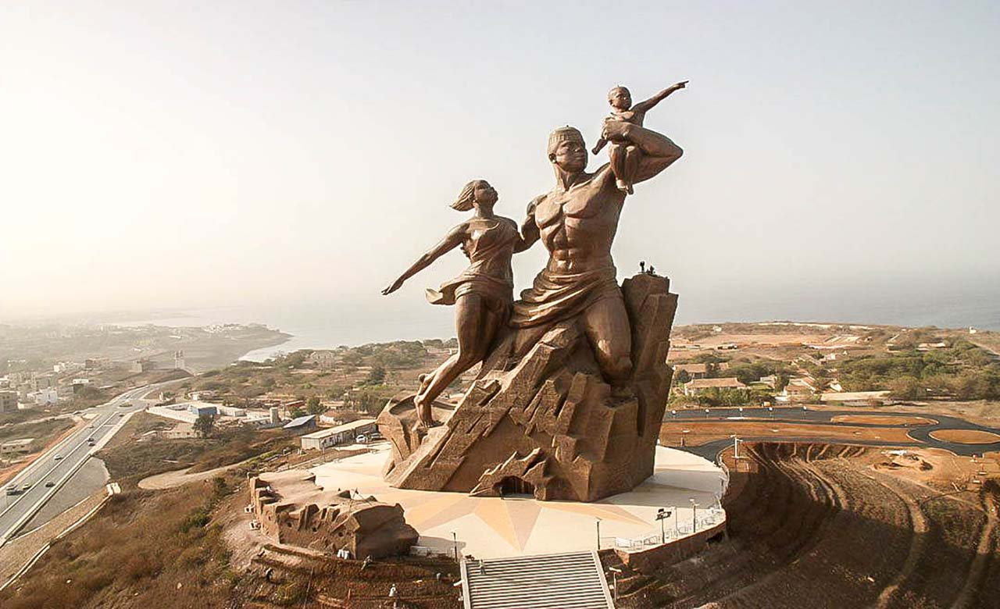

Dakar devient d'abord la capitale de l'éphémère Fédération du Mali, puis celle de la République du Sénégal le 4 avril 1960 . Dans la foulée de la décolonisation, la Grande Mosquée de Dakar est édifiée en 1964.